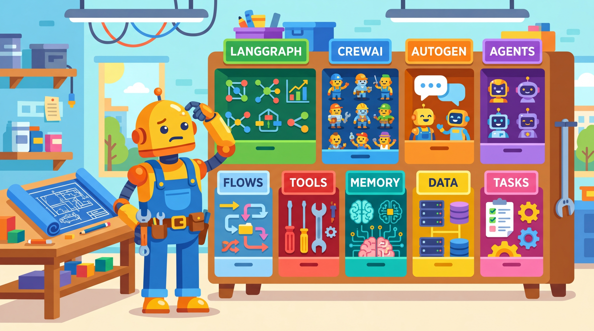
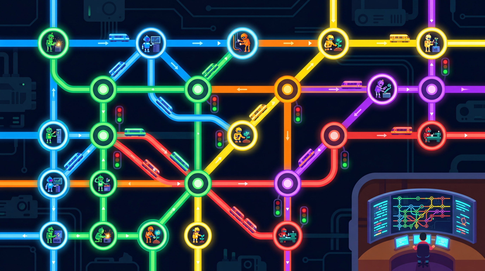

One agent is clever. A team of agents, well-orchestrated, is unstoppable.
A Framework-Savvy AI Agent
Prerequisites
This section assumes you have completed the single-agent material in Section 21.1 through Section 21.4. Understanding tool use from Section 21.2 and planning from Section 21.3 is essential, as multi-agent systems compose these single-agent capabilities.
Your single agent works. It reasons, calls tools, and solves problems. But the task has grown: you need research, writing, review, and quality assurance, all coordinated seamlessly. As Bret Victor once argued, the best tool is the one that disappears, leaving you to focus on the problem itself. One agent cannot wear every hat. You need a team. The question is: which framework should orchestrate that team?
The agent framework landscape has matured rapidly, offering multiple approaches to the same fundamental challenge: orchestrating LLM-powered reasoning, tool use, and multi-step execution. Each framework makes different trade-offs between abstraction level, flexibility, and ease of use. LangGraph provides low-level graph primitives for maximum control. CrewAI offers high-level role-based collaboration out of the box. AutoGen focuses on conversational multi-agent patterns. Native provider SDKs (OpenAI, Anthropic, Google) give direct, minimal-overhead access to each model's strengths. The single-agent patterns from Chapter 21 are the building blocks that these frameworks orchestrate.
1. The Agent Framework Landscape
As you saw in Chapter 21, a single agent combines an LLM with tools and a reasoning loop. Agent frameworks extend this foundation by managing three additional concerns: defining how agents reason and act, managing the state that flows between steps, and orchestrating the execution loop that drives everything forward. Where frameworks differ is in how much structure they impose on each of these concerns and how they handle advanced requirements like persistence, streaming, and human oversight. Figure 22.1.1 maps this spectrum from low-level SDKs to high-level orchestration platforms.

The number of agent frameworks released in 2024 exceeded the number of months in the year by roughly tenfold. Choosing one has itself become a task complex enough to require an agent.
2. LangGraph: Graph-Based Agent Orchestration
LangGraph models agent workflows as directed graphs where nodes are functions and edges define
the flow of execution. State flows through the graph as a TypedDict, and each node
receives and returns updates to that shared state. Conditional edges let you branch based on
the current state, enabling dynamic routing. LangGraph's checkpoint system serializes state at
each step, supporting time-travel debugging, resumption after failure, and human-in-the-loop
interruption.
Code Fragment 1 below puts this into practice.

2.1 Core Concepts: Nodes, Edges, and State
# Define AgentState; implement reasoning_node, tool_node, should_continue # Key operations: agent orchestration, tool integration from typing import TypedDict, Annotated, Literal from langgraph.graph import StateGraph, END from langgraph.graph.message import add_messages # State is a TypedDict with reducer annotations class AgentState(TypedDict): messages: Annotated[list, add_messages] # append-only message list next_action: str iteration_count: int # Nodes are plain functions that receive and return state def reasoning_node(state: AgentState) -> dict: """Analyze the situation and decide what to do next.""" messages = state["messages"] response = llm.invoke(messages) return { "messages": [response], "next_action": parse_action(response), "iteration_count": state["iteration_count"] + 1 } def tool_node(state: AgentState) -> dict: """Execute the selected tool and return results.""" tool_call = state["messages"][-1].tool_calls[0] result = execute_tool(tool_call) return {"messages": [result]} # Conditional edges route based on state def should_continue(state: AgentState) -> Literal["tools", "end"]: if state["iteration_count"] > 10: return "end" if state["next_action"] == "finish": return "end" return "tools" # Build the graph graph = StateGraph(AgentState) graph.add_node("reason", reasoning_node) graph.add_node("tools", tool_node) graph.set_entry_point("reason") graph.add_conditional_edges("reason", should_continue, { "tools": "tools", "end": END }) graph.add_edge("tools", "reason") # Loop back after tool execution app = graph.compile()
LangGraph's add_messages reducer is critical. Without it, returning messages from a node would overwrite the entire message list. The reducer annotation tells LangGraph to append new messages instead. This pattern of annotated reducers extends to any state field where you need merge semantics rather than replacement.
The term reducer in LangGraph refers to a function that controls how state updates are merged. Without a reducer, returning a field from a node overwrites the previous value. With a reducer like add_messages, the framework appends new values instead of replacing them. Think of it like choosing between "replace the entire document" and "append to the document."
Code Fragment 2 below puts this into practice.
2.2 Checkpointing and Persistence
# Implementation example # Key operations: results display from langgraph.checkpoint.sqlite import SqliteSaver # Enable checkpointing for state persistence checkpointer = SqliteSaver.from_conn_string("checkpoints.db") app = graph.compile(checkpointer=checkpointer) # Each invocation uses a thread_id for state isolation config = {"configurable": {"thread_id": "user-session-42"}} # Run the graph; state is checkpointed after each node result = app.invoke( {"messages": [("user", "Research quantum computing advances")], "next_action": "", "iteration_count": 0}, config ) # Resume later from the same thread state = app.get_state(config) print(state.values["iteration_count"]) # See where we left off
3. CrewAI: Role-Based Agent Collaboration
CrewAI takes a fundamentally different approach by modeling agents as team members with defined roles, goals, and backstories. You compose a "crew" of agents and assign them tasks with specific expected outputs. The framework handles delegation, context sharing, and execution order. CrewAI supports both sequential and hierarchical process modes, where a manager agent can delegate subtasks to specialist agents. Code Fragment 3 below puts this into practice.
# Implementation example # Key operations: agent orchestration, tool integration from crewai import Agent, Task, Crew, Process # Define agents with roles and expertise researcher = Agent( role="Senior Research Analyst", goal="Find comprehensive, accurate information on the given topic", backstory="You are an experienced research analyst with a talent for " "finding reliable sources and synthesizing complex information.", tools=[search_tool, web_scraper], llm="gpt-4o", verbose=True ) writer = Agent( role="Technical Writer", goal="Create clear, engaging content from research findings", backstory="You are a skilled technical writer who transforms complex " "research into accessible, well-structured articles.", llm="gpt-4o", verbose=True ) # Define tasks with expected outputs research_task = Task( description="Research the latest advances in {topic}. " "Focus on key breakthroughs from the past 6 months.", expected_output="A detailed report with at least 5 key findings, " "each supported by sources.", agent=researcher ) writing_task = Task( description="Write a technical blog post based on the research findings.", expected_output="A 1000-word blog post with introduction, key sections, " "and conclusion.", agent=writer, context=[research_task] # Receives output from research_task ) # Assemble and run the crew crew = Crew( agents=[researcher, writer], tasks=[research_task, writing_task], process=Process.sequential, # or Process.hierarchical verbose=True ) result = crew.kickoff(inputs={"topic": "quantum error correction"})
4. AutoGen/AG2: Conversational Multi-Agent Patterns
AutoGen (now evolving as AG2) pioneered conversational multi-agent interaction. Its core
abstraction is the conversable agent: agents communicate by sending messages to each other,
much like participants in a group chat. AutoGen provides several built-in agent types,
including AssistantAgent (LLM-powered), UserProxyAgent (executes code
and relays human input), and GroupChat (manages multi-party conversations). A
distinctive feature is built-in Docker sandbox support for safe code execution.
Code Fragment 4 below puts this into practice.
# Implementation example # Key operations: agent orchestration from autogen import AssistantAgent, UserProxyAgent, GroupChat, GroupChatManager # LLM-powered assistant assistant = AssistantAgent( name="research_assistant", system_message="You are a helpful research assistant. Analyze data " "and provide insights. Write Python code when needed.", llm_config={"model": "gpt-4o", "temperature": 0} ) # Proxy that executes code and relays human feedback user_proxy = UserProxyAgent( name="executor", human_input_mode="TERMINATE", # Ask human only at end code_execution_config={ "work_dir": "workspace", "use_docker": "python:3.11" # Sandboxed execution }, max_consecutive_auto_reply=5 ) # GroupChat for multi-agent conversation critic = AssistantAgent( name="critic", system_message="You review analysis for accuracy and suggest improvements.", llm_config={"model": "gpt-4o"} ) group_chat = GroupChat( agents=[user_proxy, assistant, critic], messages=[], max_round=12, speaker_selection_method="auto" # LLM picks next speaker ) manager = GroupChatManager(groupchat=group_chat) # Kick off the conversation user_proxy.initiate_chat( manager, message="Analyze the dataset in data.csv and create visualizations." )
AutoGen's use_docker parameter is essential for production use. Without it, code generated by the LLM executes directly on your host machine with full access to the filesystem and network. Always use Docker sandboxes when running untrusted or LLM-generated code. Set human_input_mode="ALWAYS" during development to review every action before execution.
5. Native Provider SDKs
5.1 OpenAI Agents SDK
The OpenAI Agents SDK provides a lightweight, opinionated framework built directly on OpenAI's
API. It introduces the concept of an Agent with instructions, tools, and handoff
capabilities. Agents can transfer control to other agents via handoffs, enabling multi-agent
workflows without external orchestration frameworks.
Code Fragment 5 below puts this into practice.
# implement search_knowledge_base # Key operations: vector search, agent orchestration, tool integration from openai import agents # Define tools as decorated functions @agents.tool def search_knowledge_base(query: str) -> str: """Search the internal knowledge base for relevant documents.""" results = vector_store.similarity_search(query, k=5) return "\n".join([doc.page_content for doc in results]) # Create agents with handoff capabilities research_agent = agents.Agent( name="researcher", instructions="You research topics using the knowledge base. " "Hand off to the writer when research is complete.", tools=[search_knowledge_base], handoffs=["writer"] ) writer_agent = agents.Agent( name="writer", instructions="You write clear, structured content based on research. " "Hand off to the reviewer for quality checks.", handoffs=["reviewer"] ) # Run the agent loop result = agents.run( agent=research_agent, messages=[{"role": "user", "content": "Write about quantum computing"}] )
5.2 Anthropic Claude Agent SDK
Anthropic's Claude Agent SDK emphasizes safety and control. It provides a structured agent loop with built-in support for tool use, extended thinking, and computer use. The SDK is designed to give developers fine-grained control over the agent's behavior while leveraging Claude's native tool use capabilities. The core pattern is a simple loop: send messages to Claude, check for tool use requests, execute the tools, and feed results back. Code Fragment 6 below puts this into practice.
# Implementation example # Key operations: agent orchestration, tool integration, API interaction import anthropic client = anthropic.Anthropic() # Define tools the agent can use tools = [{ "name": "search_knowledge_base", "description": "Search the knowledge base for relevant documents.", "input_schema": { "type": "object", "properties": {"query": {"type": "string"}}, "required": ["query"] } }] # The agent loop: reason, act, observe, repeat messages = [{"role": "user", "content": "Research quantum computing advances"}] while True: response = client.messages.create( model="claude-sonnet-4-20250514", max_tokens=4096, tools=tools, messages=messages ) # If no tool use, the agent is done if response.stop_reason == "end_turn": break # Execute each tool call and feed results back for block in response.content: if block.type == "tool_use": result = execute_tool(block.name, block.input) messages.append({"role": "assistant", "content": response.content}) messages.append({ "role": "user", "content": [{"type": "tool_result", "tool_use_id": block.id, "content": result}] })
5.3 Other Frameworks at a Glance
Several additional frameworks serve specific niches in the agent ecosystem:
- Smolagents (by Hugging Face): A minimalist framework supporting both tool-calling and code-based agents. It works well with open-source models and focuses on simplicity over features. Best for quick prototyping when you want minimal dependencies.
- PydanticAI: Brings type safety to agent development by using Pydantic models for structured inputs and outputs. Particularly valuable when you need validated, structured responses from agents (e.g., filling forms or generating structured data).
- Google ADK (Agent Development Kit): Integrates with Google's Gemini models and provides tools for building agents within the Google Cloud ecosystem. Supports sub-agent delegation and session-based state management.
The agent ecosystem is converging on standardized communication protocols. Anthropic's Model Context Protocol (MCP) standardizes how agents connect to external tools and data sources. Google's Agent-to-Agent (A2A) protocol defines how agents from different frameworks can communicate with each other. As these protocols mature, the choice of agent framework will matter less because agents built with different tools will be able to interoperate. Meanwhile, research into adaptive framework selection (where a meta-agent chooses the best orchestration pattern for each task at runtime) is gaining traction, with early results from AutoAgents (2024) and DynaSwarm (2025) suggesting that static framework choices may eventually give way to dynamic composition.
6. Framework Comparison
| Framework | Abstraction | Multi-Agent | Checkpointing | Best For |
|---|---|---|---|---|
| LangGraph | Graph primitives | Custom via subgraphs | Built-in (SQLite, Postgres) | Complex, custom workflows |
| CrewAI | Role-based agents | Native (crews, delegation) | Limited | Team collaboration patterns |
| AutoGen/AG2 | Conversational agents | Native (GroupChat) | Manual | Code execution, group chat |
| OpenAI Agents SDK | Handoff-based | Via handoffs | Platform-managed | OpenAI-native workflows |
| Claude Agent SDK | Tool-use loop | Manual orchestration | Manual | Safety-critical agents |
| PydanticAI | Type-safe agents | Manual orchestration | Manual | Structured, validated outputs |
| Smolagents | Minimal wrapper | Basic | None | Quick prototyping, open models |
| Google ADK | Tool-use agents | Via sub-agents | Session-based | Gemini and Google Cloud |
Framework choice is not permanent. Many production systems combine frameworks. You might use LangGraph for your core workflow orchestration while using native SDKs for individual agent nodes. The key is understanding what each framework provides so you can mix and match effectively. Start with the simplest approach that meets your requirements and add complexity only when needed.
7. Lab: Build the Same Agent in Three Frameworks
The best way to understand framework trade-offs is to build the same agent in multiple frameworks. Let us build a simple research agent that takes a topic, searches for information, and produces a summary. We will compare how LangGraph, CrewAI, and the OpenAI native SDK handle this identical task. Figure 22.1.2 shows the lab exercise structure.
When comparing frameworks, measure what matters for your use case. For a quick prototype, CrewAI gets you running fastest. For a production system that needs fine-grained state management and resumability, LangGraph is more appropriate. For minimal dependencies and tight provider integration, native SDKs win. There is no universally "best" framework; there is only the best framework for your specific requirements and constraints.
Knowledge Check
1. What is the purpose of the add_messages annotation in LangGraph state?
Show Answer
add_messages annotation acts as a reducer that tells LangGraph to append new messages to the existing list rather than replacing the entire list. Without it, returning a messages field from a node would overwrite all previous messages, losing conversation history.2. How does CrewAI's context parameter on a Task work?
Show Answer
context parameter accepts a list of other Task objects whose outputs should be passed as context to the current task. This creates a dependency chain where one agent's output feeds into another agent's input, enabling sequential collaboration without manual message passing.3. What are the three human_input_mode options in AutoGen, and when would you use each?
Show Answer
"ALWAYS" asks for human input after every agent response, best for development and debugging. "TERMINATE" asks for human input only when the conversation ends or a termination condition is met, suitable for supervised production use. "NEVER" runs fully autonomously without human intervention, appropriate only for well-tested, low-risk workflows.4. Why might you choose native provider SDKs over a framework like LangGraph or CrewAI?
Show Answer
5. What role does Docker play in AutoGen's code execution, and why is it important?
Show Answer
Choosing an Agent Framework for Customer Onboarding
Who: Platform engineering team at a B2B SaaS company
Situation: The team needed to automate customer onboarding, which involved document collection, compliance verification, CRM updates, and welcome email sequences.
Problem: The workflow had conditional branching (different paths for enterprise vs. SMB customers), required human approval at compliance checkpoints, and needed to recover gracefully from partial failures.
Dilemma: CrewAI offered faster prototyping with role-based agents, but LangGraph provided the conditional routing and checkpointing needed for production reliability.
Decision: The team chose LangGraph for its graph-based state management, conditional edges, and built-in checkpoint persistence.
How: They modeled the onboarding flow as a directed graph with TypedDict state, used conditional edges for enterprise vs. SMB routing, and configured PostgreSQL-backed checkpointing for crash recovery and human-in-the-loop approvals.
Result: Onboarding time dropped from 3 days (manual) to 4 hours (automated with human checkpoints). Failed steps resumed from the last checkpoint instead of restarting, saving 60% of retry costs.
Lesson: When workflows require conditional branching, human approval gates, and crash recovery, graph-based frameworks like LangGraph justify the steeper learning curve over simpler role-based alternatives.
Key Takeaways
- Framework choice depends on your use case: LangGraph for complex custom workflows, CrewAI for rapid team-based prototyping, AutoGen for conversational multi-agent patterns, native SDKs for maximum control and provider-specific features.
- LangGraph's power comes from graph primitives: TypedDict state with reducer annotations, conditional edges for dynamic routing, and built-in checkpointing for persistence and resumability.
- CrewAI excels at role-based collaboration: defining agents with roles, goals, and backstories, then letting the framework handle delegation and context passing between tasks.
- AutoGen pioneered conversational multi-agent patterns: agents communicate via messages in group chats, with Docker sandboxes for safe code execution and configurable human-in-the-loop controls.
- Start simple, add complexity as needed: begin with the simplest approach that meets your requirements. You can always migrate to a more capable framework or combine frameworks as your needs grow.
What's Next?
In the next section, Section 22.2: Multi-Agent Architecture Patterns, we explore multi-agent architecture patterns, including hierarchical, debate, and ensemble approaches to agent coordination.
References & Further Reading
LangGraph Documentation. (2024). "LangGraph: Build Stateful Multi-Actor Applications."
The leading framework for building stateful multi-agent workflows as directed graphs. Supports cycles, persistence, and human-in-the-loop patterns. The default choice for LangChain-ecosystem agent orchestration.
CrewAI Documentation. (2024). "CrewAI: Framework for Orchestrating Role-Playing AI Agents."
A framework designed around the metaphor of a crew with roles, goals, and tasks. Simplifies multi-agent setup with declarative configuration. Ideal for teams wanting quick multi-agent prototyping.
Microsoft's framework for building multi-agent systems through conversational interactions. Supports flexible conversation patterns and human participation. Key paper for understanding conversational multi-agent design.
OpenAI's official SDK for building multi-agent systems with handoffs and guardrails. Provides a streamlined approach to agent orchestration. Recommended for teams building on OpenAI models.
Anthropic. (2024). "Claude Agent SDK Documentation."
Anthropic's guide to building agent systems with Claude, including multi-agent patterns. Covers tool use, context management, and orchestration. Essential for Claude-based multi-agent development.